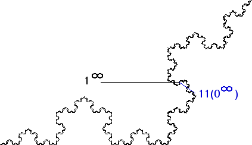

| 8.(d) Consider the point 1infinity. |
| To show this point has no tangent, we shall produce a sequence of points converging to this point, with the chords winding round and round 1infinity. |
|  |
| Next, consider the chord between the point 1infinity and the point 11(0infinity). |
| Click the picture for the next point in the sequence. |
Return to Address questions.